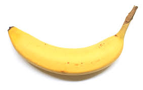

To the trivial, ordinary every day, joe shmow it is common knowledge bananas grow on trees in big bundles.
Bananas come from the underworld. they are made by Satan. Bananas are pro dino bananas are put onto the trees in bunches to defend the onslaught of plantains that the aliens are forcing upon us satan places the bananas there daily to ensure full defence. 1 on 1 plantains have the upperhand on their sugar filled counterparts. however satan being the clever bugger he is accounted for this, hence the bunches.

other things about nanners and tains